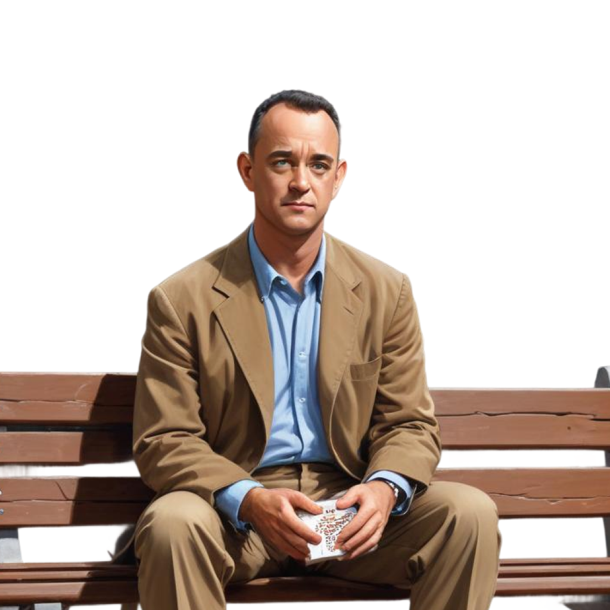
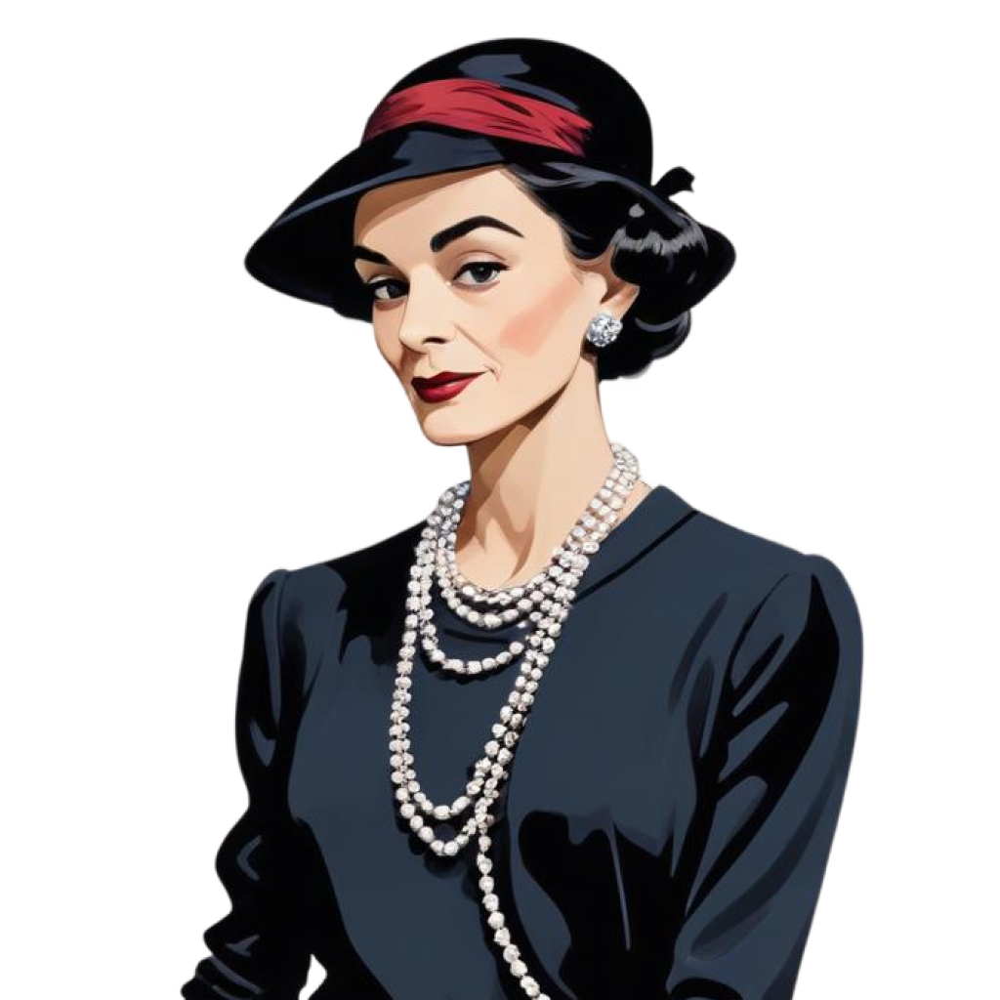
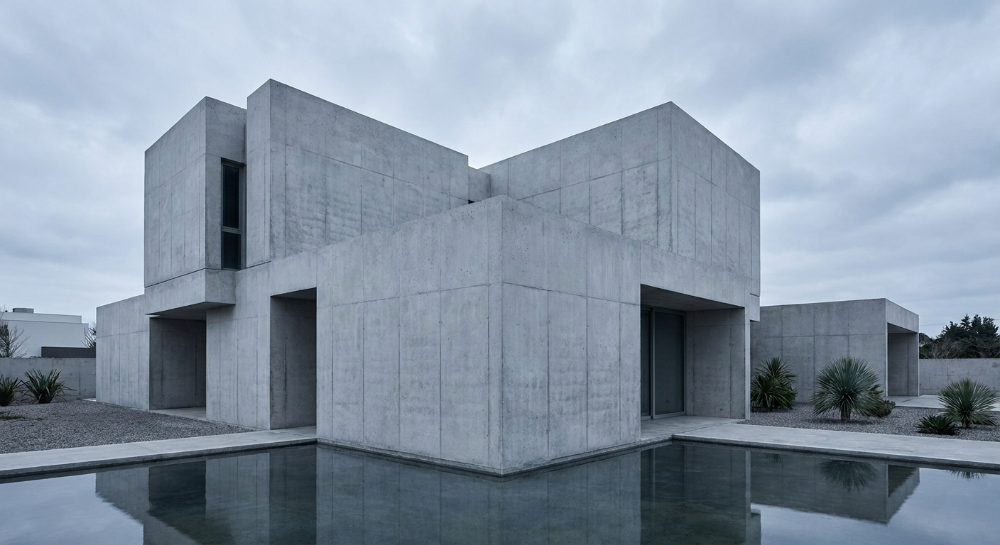
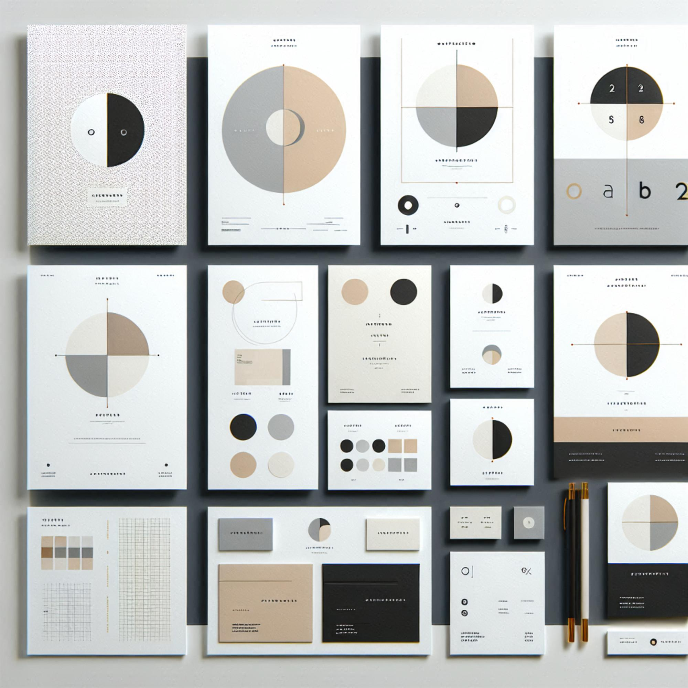
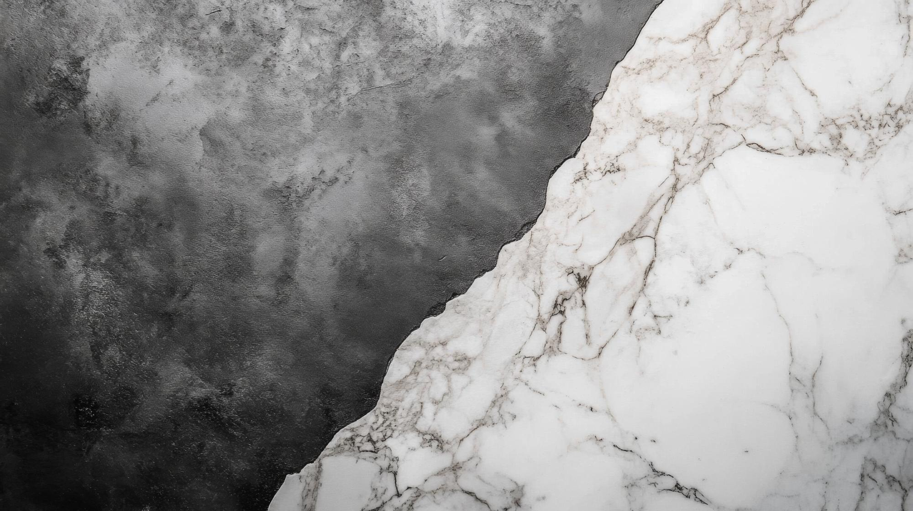
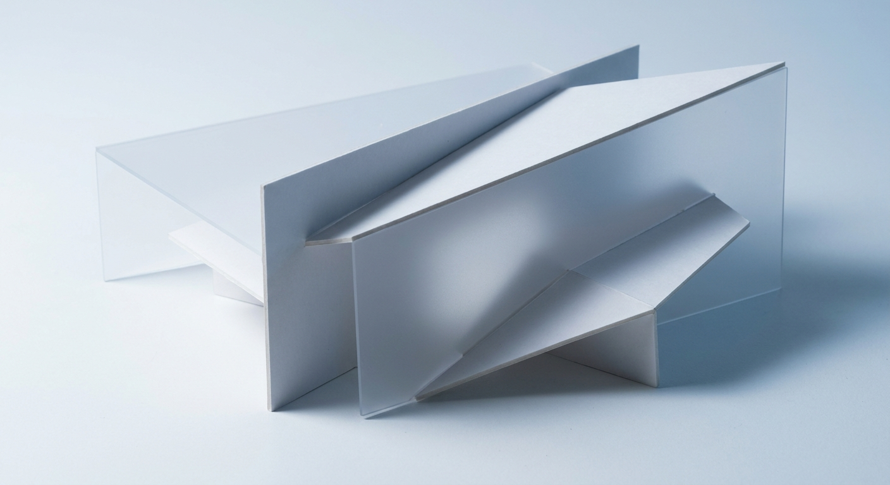

Creative Direction.
The creative concept, in four steps. Colors and type live in Visual Rules, the logo in Logo, the full signature in Signature.
Master Stylescape.
FP's locked palette and type, the Viewfinder signature, the logo, founder photography, and live applications, composed into one board. This is the master format every FP brand decision is checked against, and the format future brand stylescapes follow.
Brand Archetype.
Every brand carries a psychological signature. The archetype mix balances character traits so the brand reads consistently across every touch point. Three archetypes, weighted, drive every downstream decision.



Brand Style.
Axes that calibrate brand style. Each slider positions the brand on a spectrum from one trait to its opposite. The dots lock in a precise coordinate, not a vague direction.
Stylescape.
Every reference image maps to a design principle. These are not decoration. They are the visual vocabulary that informs every layout, photo direction, and texture choice.








Signature Preview.
Variants of the the viewfinder bracket. Each has a specific use case. Never decorative. Full construction spec: references/viewfinder.md.
comes into focus.

Full construction, clear space, and usage rules live on the Signature page (B3).